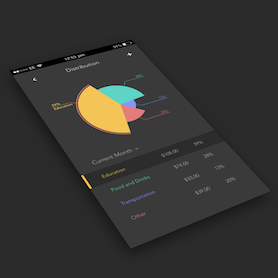

Day 43 - Check Your Spendings
I wanted to create a graph today, and as I was looking on Google for inspiration, I came across a really nice layout of a Spending Distribution pie chart. So I decided to replicate it with small changes here and there to make it more of my own.
I was worried about creating the pie chart in the beginning, but I remember from one of my designs on how to create the angle for each of the pies. The main technique is to add extra points on a path, so the angle will be able sharp without changing the size of the circle.
One thing I changed was the title of the categories. Instead of Distribution (this month), I changed it to Current month and added a little arrow icon to indicate a drop-down. This drop-down list will allow the user to be flexible by choosing the time length that they want displayed, varying from one month all the way to one year.
I'm starting to realize techniques that I've learned in past designs are coming back. Today's design was a lot faster to create than I thought it'd be and I had a ton of fun creating it.